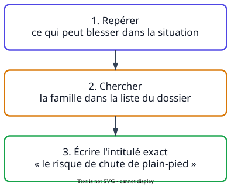

Ce que demandent les sujets
- « Identifier trois risques professionnels auxquels le salarié est exposé. »
- « Indiquer la famille de risque correspondant à cette situation. »
La méthode

À retenir
- La forme attendue
- « le risque de… » ou « le risque lié à… », suivi de l'intitulé de la liste.
- La liste du dossier
- elle change d'une session à l'autre : toujours la lire avant de répondre.
- Un même danger
- peut relever de plusieurs familles de risques.
- À éviter
- décrire une action (« glisser », « se couper ») ou un dommage à la place du risque.
Un exemple de bac
« Identifier trois risques professionnels prépondérants sur un chalutier de marins-pêcheurs. »
Sujet 2026
InsuffisantGlisser sur le pont, se couper, le moteur.
MaîtriséLe risque de chute de plain-pied, le risque lié aux équipements de travail et le risque lié au bruit.
La grille attend les intitulés de la liste du dossier. « Glisser » décrit un événement, « se couper » un dommage, « le moteur » un danger.